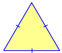
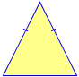
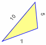
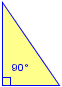
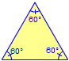
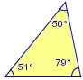
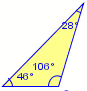

The seven types of triangle can be classified (grouped) according to their sides or interior angles as shown below. Click on any triangle to go to its detail page.
|
 3 sides equal
|
 2 sides equal
|
 No sides equal
|
|
 One angle exactly 90°
|
 3 angles equal
|
|
 All 3 angles less than 90°
|
 One angle
more than 90° |